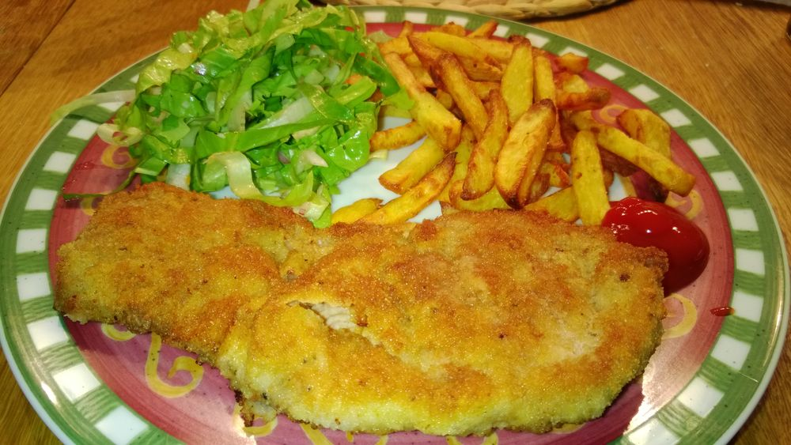

Schniposa: Schnitzel-Pommes-Salat

Description:
A classic German meal featuring crispy, golden-brown schnitzel served alongside perfectly baked or fried potatoes (pommes) and a refreshing side salad.
It offers a hearty, balanced combination of savory meat, crispy potatoes, and fresh veggies.
Ingrediants:
- Pork or chicken cutlets (4 pieces)
- Flour (1/2 cup, for dredging)
- Eggs (2, beaten)
- Breadcrumbs (1 cup)
- Potatoes (500g, peeled and cut into wedges)
- Olive oil (2 tbsp)
- Mixed salad greens (100g)
- Cherry tomatoes (100g, halved)
- Cucumber (1/2, sliced)
- Salad dressing (e.g., vinaigrette or creamy dressing, 3 tbsp)
back to home